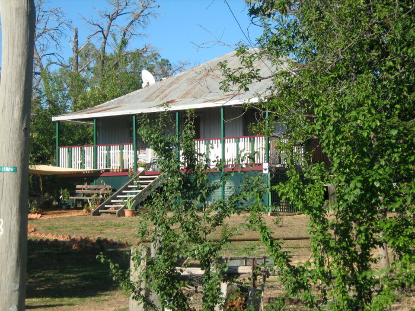

Re-constructing the Verandah
When we got the place the front verandah was rather rickety and rotten:
It was also constructed very inefficiently, built on stumps with posts above the floor. We wanted to have greater strength using less timber by having posts going right to the ground sitting on metal stirrups set in concrete:
We also wanted to put a couple of small tanks underneath
We had bought the timber almost a year before (second-hand hardwood) but delayed the job while we organised the tanks and got side-tracked on other jobs etc. In the meantime we got some free old decking on a freebies website. Finally in May 09, after we moved to Rye Park, we fixed the leak in the newer tank, and decided to leave an access hatch in the decking in case we needed to fix the older tank later. So in June 09 we proceeded with the rebuilding:
We also got some bonus firewood, just in time for the first real cold-snap of winter...
Finally in January 2010 we put the railing panels on (we painted the parts separately then glued and clamped them together)

Home
House
Six Kitchens
Asbestos
Verandah
Tanks
Fort Veg
Orchard
Pacas